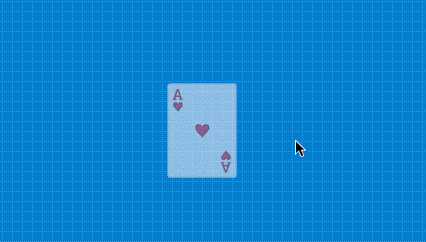

Eventos
En pilas llamamos "eventos" a las señales que emiten el mouse o el teclado. Por ejemplo, un "click" del mouse es un evento al igual que la pulsación de una tecla.
Y lo interesante de los eventos es que podemos capturarlos y disparar alguna acción dentro del juego para responder. Por ejemplo, en un juego de acción, el "click" del mouse podría realizar una explosión o hacer que un personaje salte.
¿Cómo capturar un evento del mouse?
Para capturar un evento desde el mouse simplemente hay que declarar alguna de estas funciones en el código:
- cuando_hace_click(x, y, evento_original)
- cuando_mueve(x, y, evento_original)
Estas funciones se pueden crear en el código de una escena o de un actor. La diferencia es que en las escenas el "click" o el movimiento se van a detectar en toda la pantalla, mientras que en el código del actor solo se detectarán si el mouse apunta al actor.
Veamos un ejemplo, imaginá que queremos crear actores de la clase "Pelota" cada vez que el usuario hace "click" sobre la pantalla. Podríamos hacerlo colocando este código en la escena:
class escena2 extends Escena {
iniciar() {}
actualizar() {}
cuando_mueve(x, y, evento_original) {}
cuando_hace_click(x, y, evento_original) {
let pelota = this.pilas.actores.pelota();
pelota.x = x;
pelota.y = y;
}
}¿Cómo capturar eventos del mouse en un actor?
Para capturar eventos en el contexto de un actor, tenemos que usar las mismas funciones, pero declarándolas dentro del código del actor.
Por ejemplo, imaginá que estamos haciendo un juego de cartas y queremos que la carta se pueda hacer girar con un "click" de mouse y que cambie de transparencia cuando el mouse esté sobre ella:

El código del actor debería quedarnos algo similar a lo siguiente:
class actor extends Actor {
propiedades = {};
iniciar() {
this.transparencia = 50;
}
actualizar() {}
cuando_mueve(x, y, evento_original) {
this.escala = 1.2;
this.transparencia = 0;
}
cuando_sale(x, y, evento_original) {
this.transparencia = 50;
this.escala = 1;
}
cuando_hace_click(x, y, evento_original) {
this.rotacion = [360];
}
}Los manejadores de eventos como cuando_mueve, cuando_sale y cuando_hace_click van a ser llamados internamente cuando se produzcan esos eventos sobre el actor.